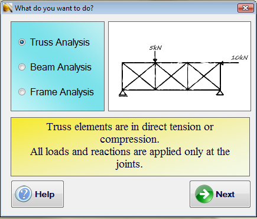
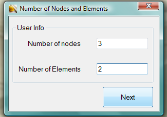
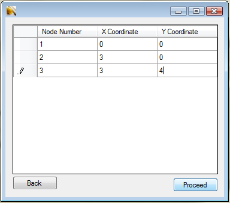
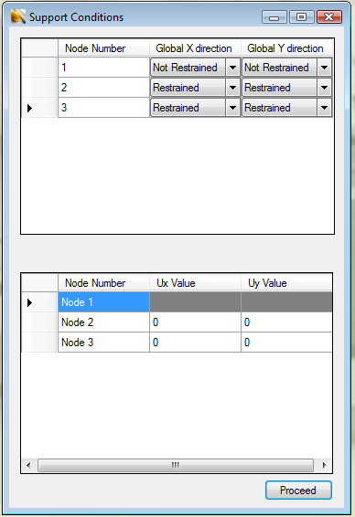
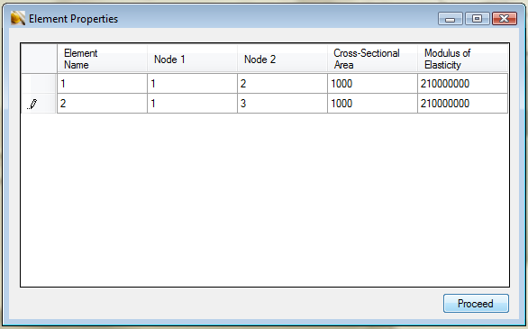
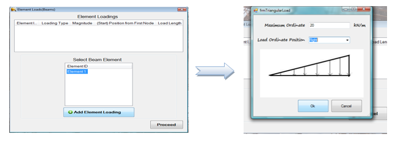
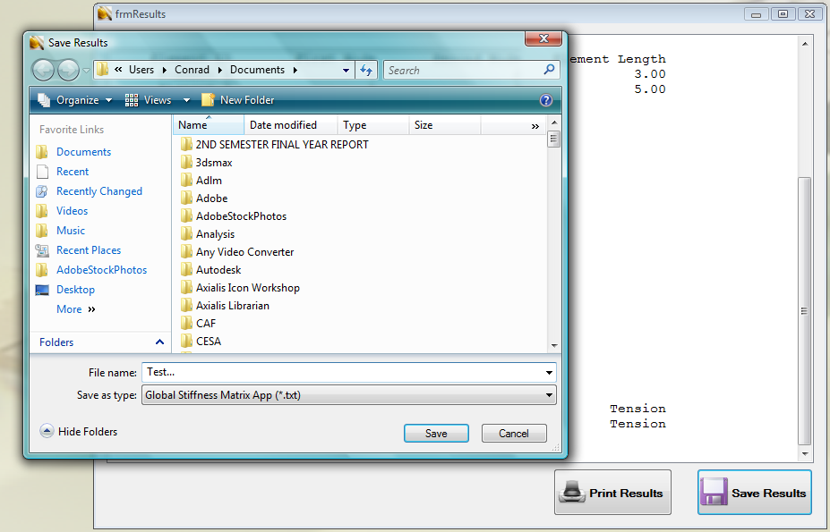

The PFA 2-D program has been developed with very user friendly steps. Any individual conversant with how to manually analyze
a structure using the stiffness matrix approach will find it very easy to use. The basic steps involved in using
it are presented below.
Step One
User chooses which element type analysis is based on and clicks next to proceed.

Step Two
User specifies the number of nodes and elements the structure is made up of

Step Three
The coordinates for the nodes is specified in the global coordinate system.

Step Four
User specifies the boundary conditions for the nodes and supplies support settlement or rotation values, if any

Step Five
The user provides the element-node connectivity information as well as some element properties such as:
- Element Cross-Sectional Area
- Element Moment of Inertia
- Element Modulus of Elasticity

Step Six
If the analysis involves element loadings, they will also have to be specified. The following element loadings have been
incorporated in the program:
- The uniformly distributed load
- The point load
- Triangular loads
- Trapezoidal load
With an element having a triangular load on it for instance, the user first selects the element, and specifies the element
load type as triangular. Finally the orientation of the load ordinate as well as the load ordinated value is specified.
This is shown in the Figure below

The results of the analysis is then finally presented - first the formulated global stiffness matrix and then other output
values such as stresses, forces and reactions. The results can then be saved or printed out.
